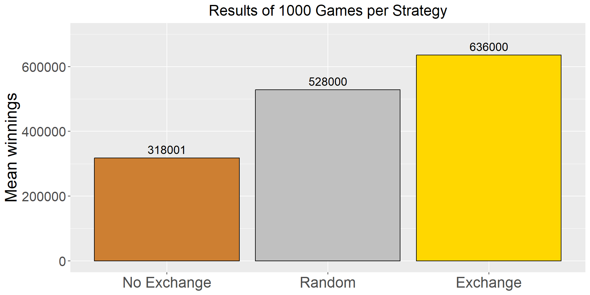

Simulating the Monty Hall Problem
Arsid MASHI
Sunil NAHATA
2025-11-29
Overview
- What is the game all about?
- Simulation (in R)
- Results (1000 simulations per strategy)
- Intuition vs Math
- Conclusion
Rules of the game
Rules of the game
Rules of the game
Rules of the game
Rules of the game
Player then chooses: - No switch - Switch - Random choice
Goal: maximize expected winnings
Why this is interesting
- Intuition: “Two boxes left → 50/50”
- Reality: conditional probability changes the situation
- We’ll test by simulation (1000 runs per strategy)
Simulation
We simulate three functions (no switch, switch, random). Each game:
- Create boxes
c(1e6, 0.10, 0.10)placed randomly - Player makes an initial uniform random pick
- Host opens a dime box among the remaining
- Player applies a strategy to pick final box
- Repeat N times and compute mean winnings
No Switch
Always switch
Random choice
1000 simulations per case
No Switch Random Switch
361000.1 512000.0 669000.0 Results — Mean Winnings
Interpretation
No switch ≈ 33%
Random ≈ 50%
Switch ≈ 66% ← Best strategy
Switching increases the win probability by almost two times than staying.
Why switching wins
Initial pick has probability 1/3 of being the million
The two other boxes together have 2/3
Host removes one losing box among the two others
The remaining closed box therefore carries the full 2/3 probability